肖鹏默认服右向 · 修改前后实际输出
返回正常 / 慢速动态预览
对比取自真实 Unity 渲染。两版步态不同，所选近似相位已注明；旧输出只作失败对照。图片显示裁去空白，像素文件没有被修改。
走路经过姿势：头颈与鞋底
R03 修改前 · 未通过 · 相位 0.255R13 最新样板 · 相位 0.233跑步抬腿：头颈、髋部与脚踝
R03 修改前 · 未通过 · 相位 0.767R13 最新样板 · 相位 0.758
R13 全部主要相位的关节近景
同时检查连接余量、弯曲过程与地面参照，不能只用一张站立截图验收。
走路 · 相位 0.027
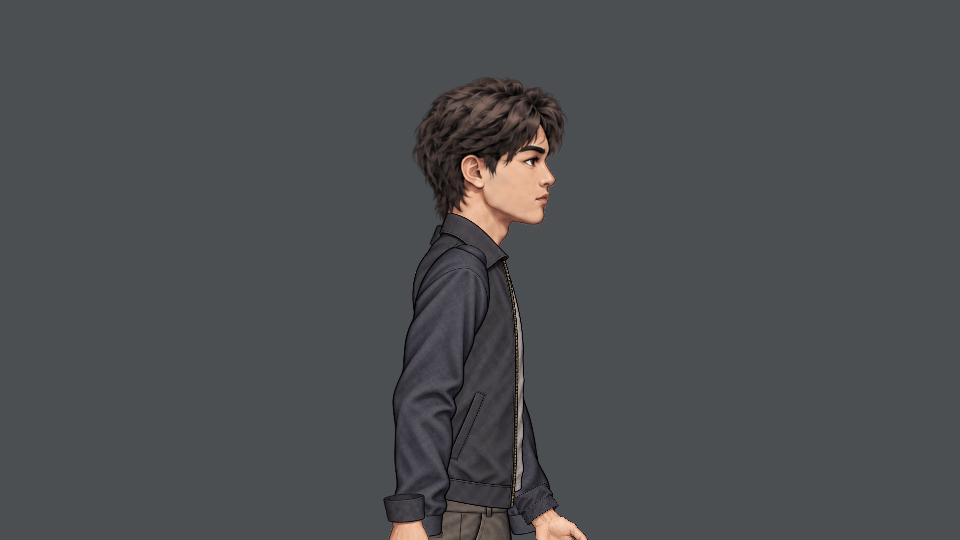
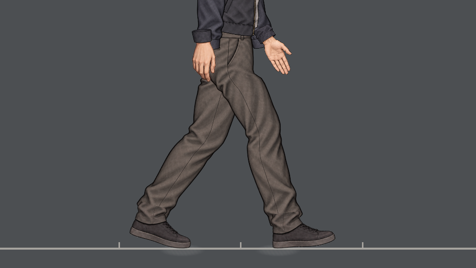
走路 · 相位 0.268
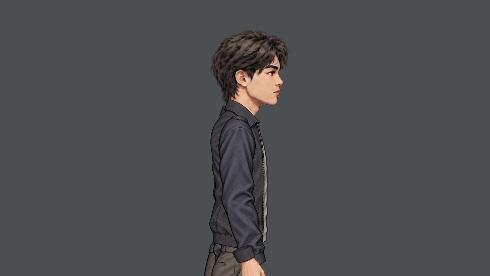
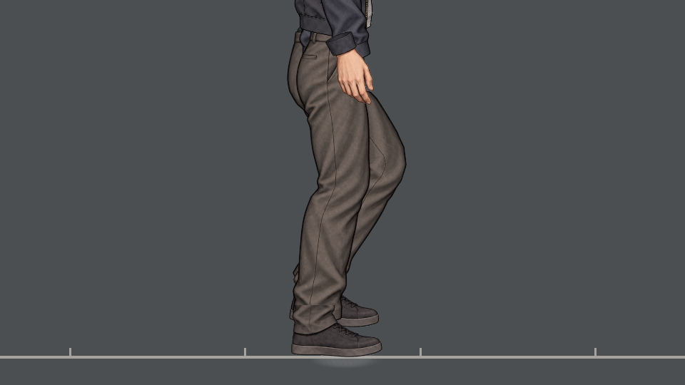
走路 · 相位 0.519
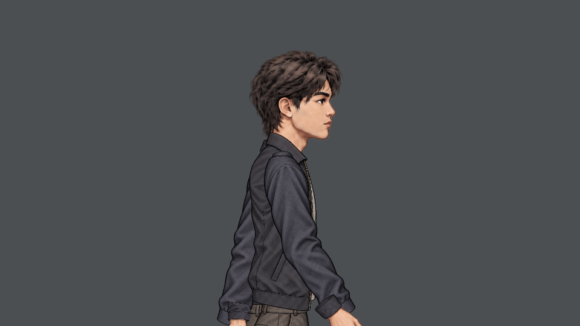
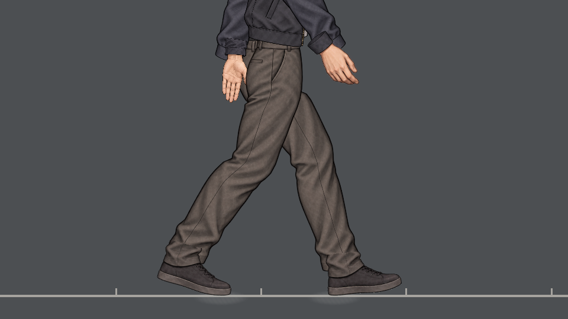
走路 · 相位 0.765
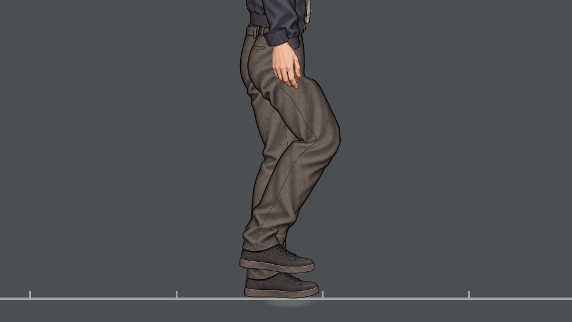
跑步 · 相位 0.758
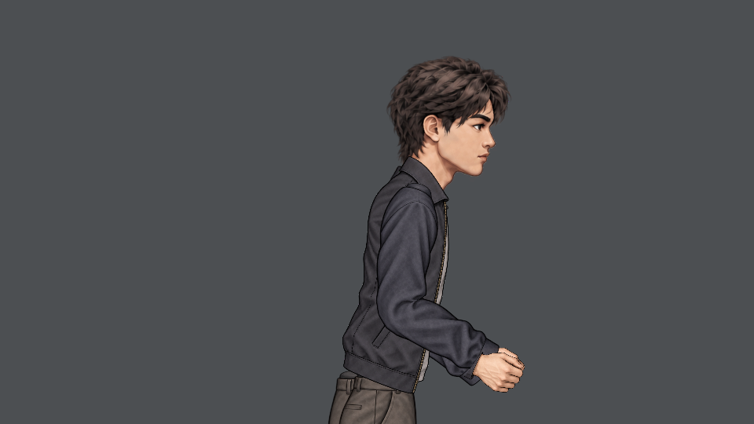
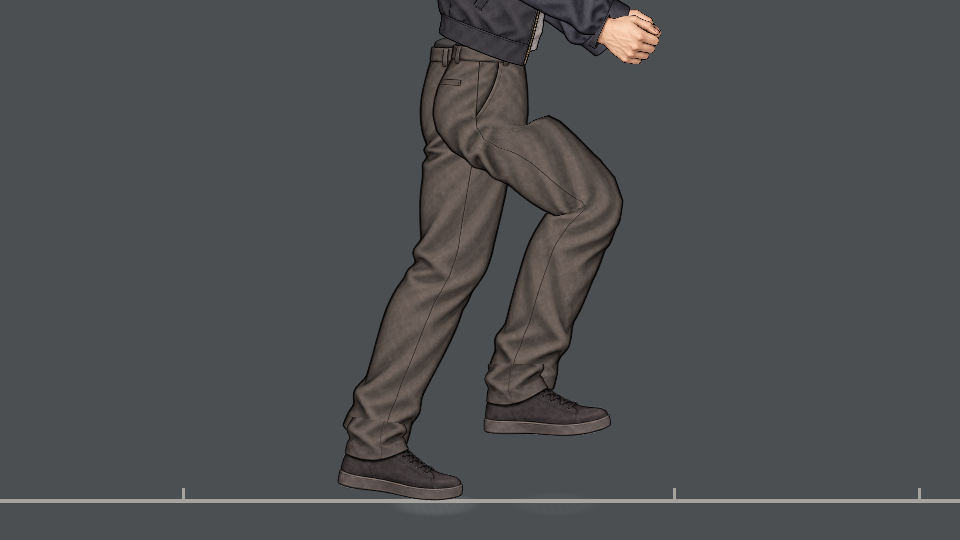
跑步 · 相位 0.024
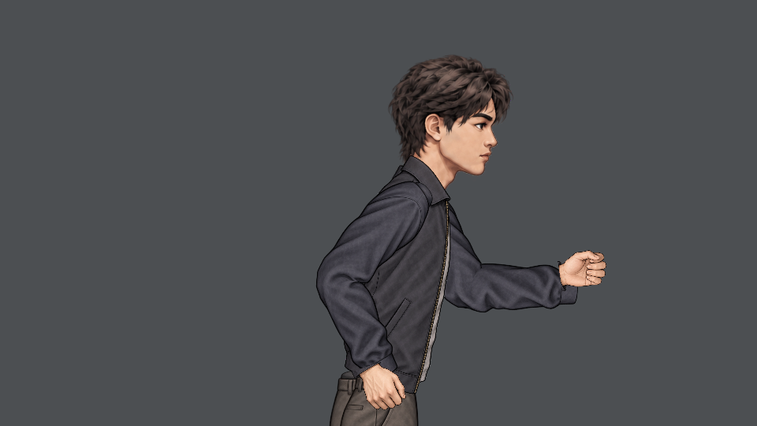
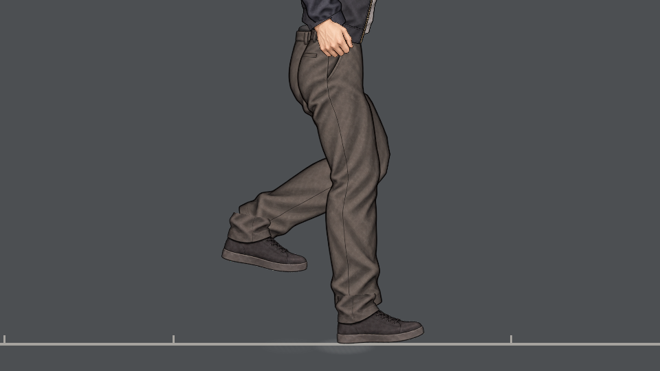
跑步 · 相位 0.269
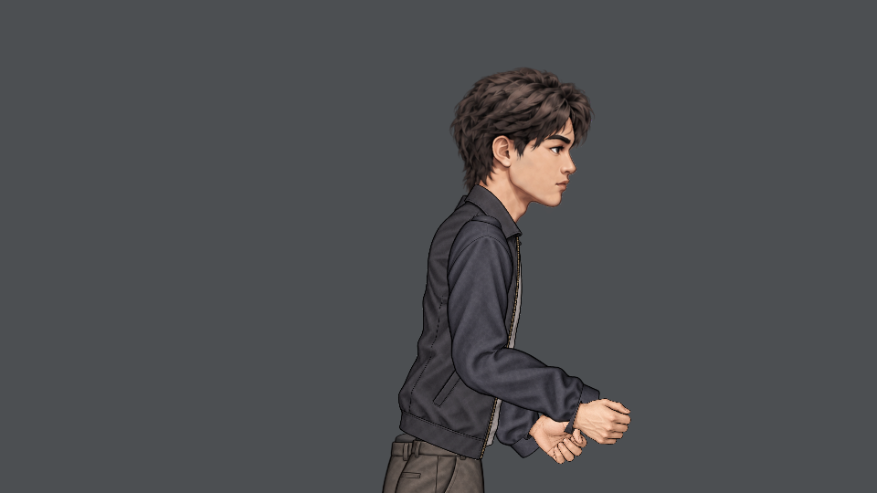
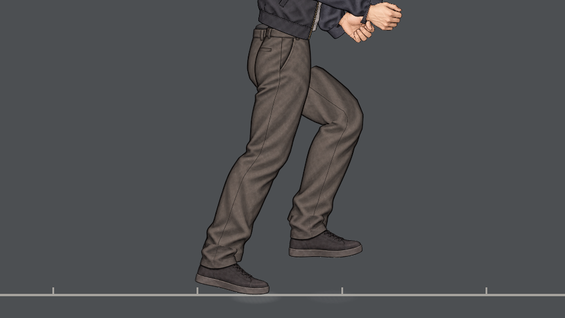
跑步 · 相位 0.501
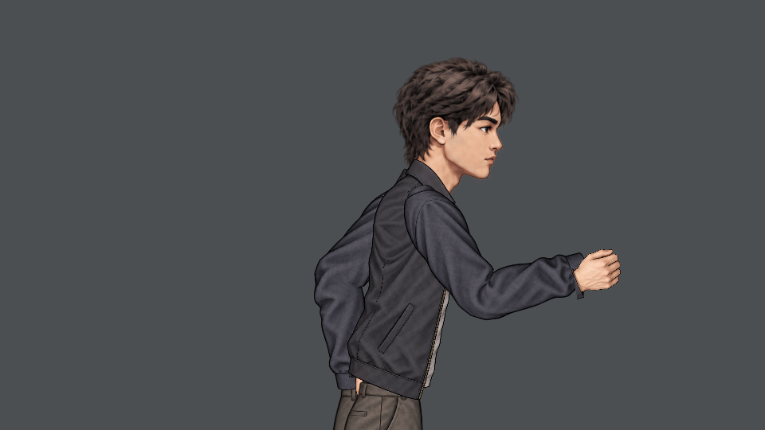
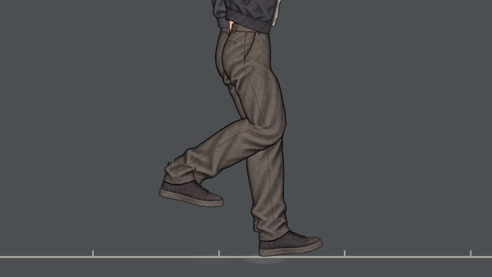
P02 全阶段未完成，右向样板待用户审美复核。其它方向、身份及生产集成不可由本页认定通过。